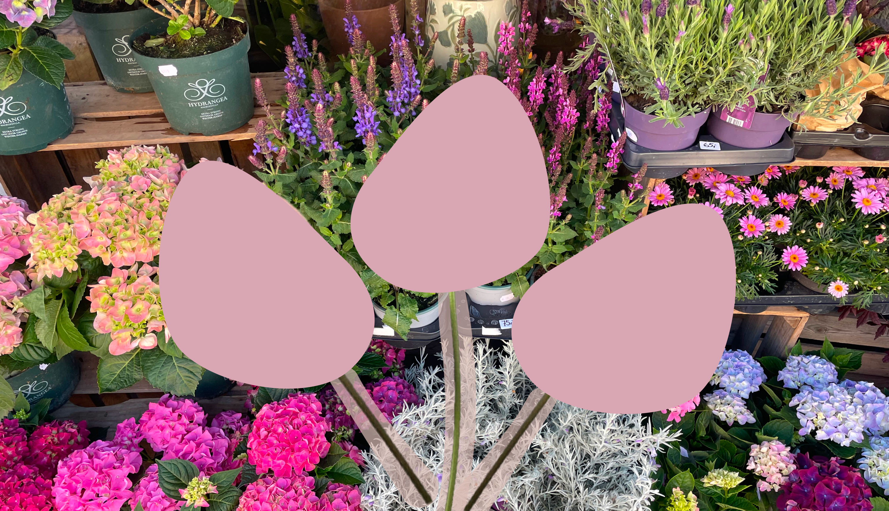
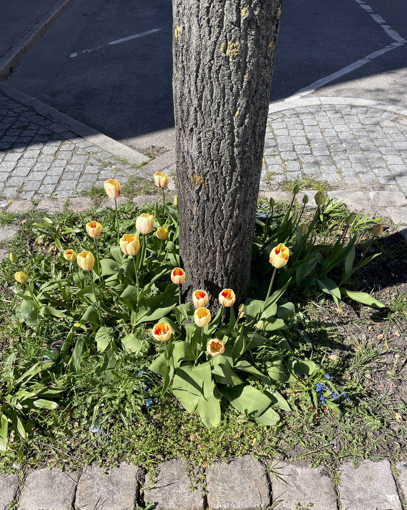
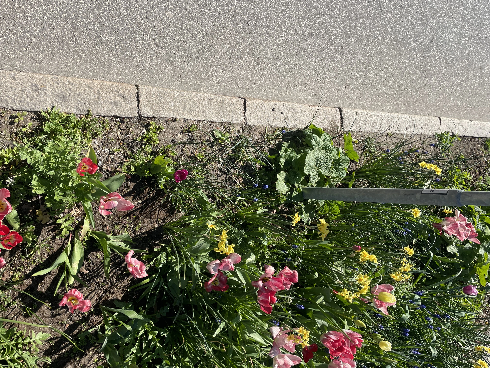
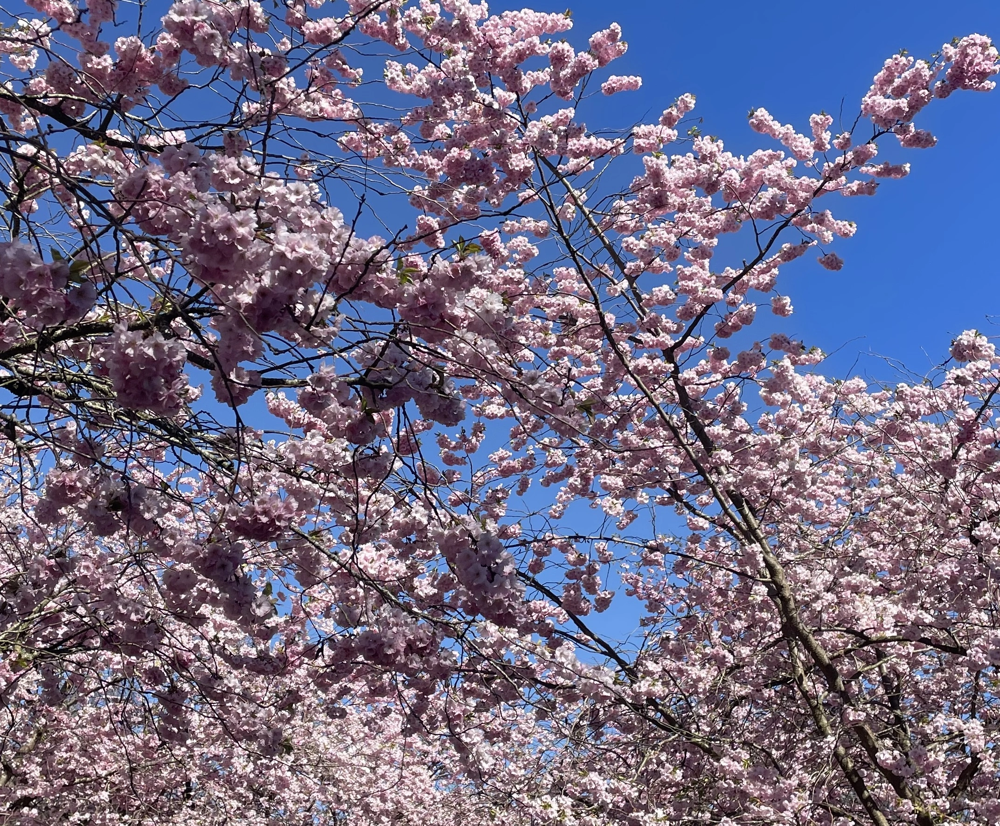
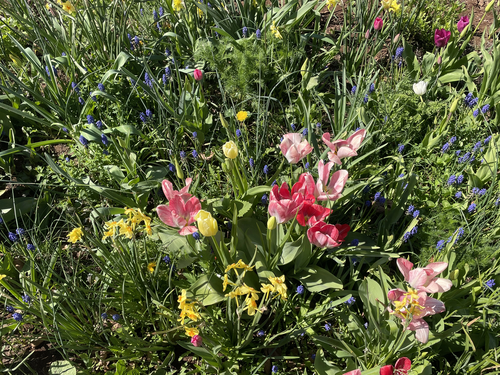

Blomster på gaden
Forår i byen
Blomster mellem fliser og fortove
På Nørrebro begynder foråret at vise sig i små, men tydelige spor. Rundt om træer og langs fortove dukker de første blomster op mellem græs og fliser. Her ses blandt andet tulipaner, som står i klare gule og røde nuancer og bryder det ellers rå bymiljø.
I trækronerne folder kirsebærblomster sig ud i lyserøde skyer. De fylder gaderne med farve og skaber en kontrast til den blå himmel og de mørke grene. De er kun fremme i en kort periode, men markerer tydeligt overgangen til forår.
Tættere på jorden vokser en blanding af forskellige forårsblomster. Her kan man finde påskeliljer, små blå perlehyacinter og enkelte mælkebøtter , som alle vokser side om side. Det giver et mere vildt og uperfekt udtryk, hvor naturen får lov til at sprede sig frit. Blomsterne på Nørrebro er ikke plantet for at være perfekte, men opstår i mødet mellem natur og by. De findes i kanter, sprækker og små grønne områder - og er med til at gøre byen levende på en stille måde.



